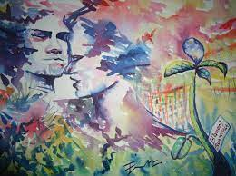
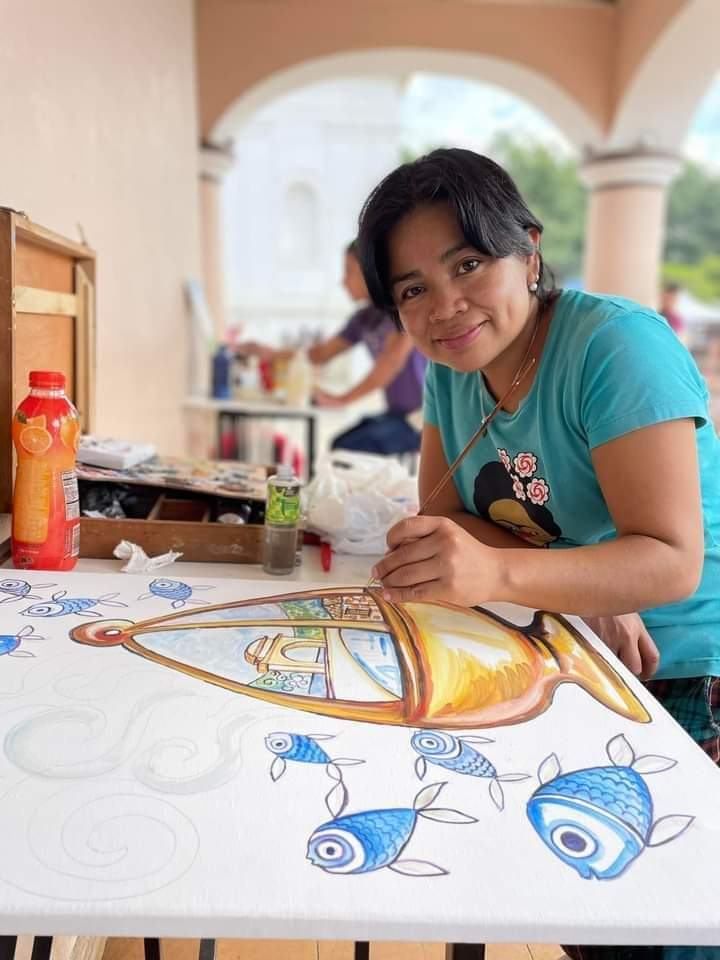
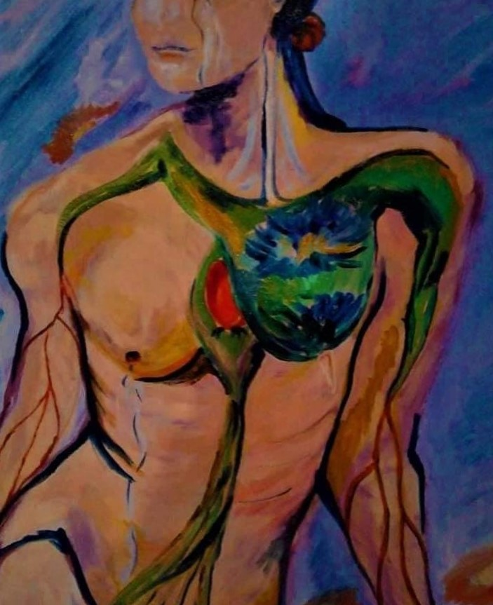

Evelyn Moran
Evelyn, es una mujer que ha logrado transcender y mostrar,
con su trabajo, que las mujeres pueden luchar, liderar y promover el desarrollo.
Es una reconocida artista de la pintura, gestora cultural de diversos proyectos y organizadora de eventos de arte.
Además, ha trasmitido sus conocimientos con niños, niñas, adolescentes y
mujeres, a través de talleres y cursos, para diferentes proyectos culturales con los que ha trabajado.
Ella, conoce bien lo que es trabajo voluntario, ya que, muchos de los proyectos en los que ha participado,
ha donado todo su esfuerzo, amor y dedicación, sin ánimo de lucro.
Ha sido co-organizadora, junto al reconocido artista de San Cristóbal Verapaz,
Domingo Morán Pop, del festival artístico «Aires Libres».
Evento que sea ha realizado año con año, desde 2011; y que, en 2017,
convocó el arte de más 89 artistas, incluidos el Maestro Manolo Gallardo.
Ha presentado sus obras artísticas en diferentes galerías de Guatemala.
Sitios que han expuesto sus pinturas: Palacio Nacional de la Cultura, Club Italiano de Guatemala,
Centro Cultural Miguel Ángel Asturias y la Embajada de Panamá en Guatemala.
Además, se ha consagrado como artista internacional, exponiendo en Roma,
Verona y Ciudad del Vaticano, en las exposiciones colectivas: Herencia Milenaria, Eterna Primavera
y Guatemala es Guatemala.
Entre los reconocimientos que Evelyn ha recibido están: «Homenaje como pintora y gestora cultural»,
por la Embajada de Panamá en Guatemala; y «Personaje ilustre e hijos adoptivos de Alta
Verapaz » en 2007; entre otros. sus obras se han expuesto en la Galería de Arte de Florida, EEUU , Roma.
Me gustaría que vieras algunas de las pinturas de Alfredo Gálvez Suárez ¡Son increíbles! ¿Te gustaría conoerlas?
